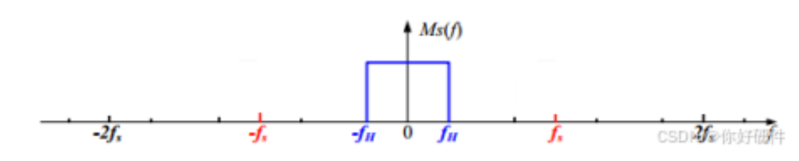

signal processing¶
采样定理¶
核心：采样频率需要是原始信号的带宽的两倍
采样定理的数学描述¶
假设一个连续时间信号 \(x(t)\) 是带限的，即它的频谱（傅里叶变换）满足： \(X(f)=0,\quad\forall |f|>B\), 其中 \(B\) 是信号的最高频率（带宽），单位是赫兹（Hz）。这种信号称为带限信号。 根据采样定理：
- 如果用采样间隔 \(T_s = \frac{1}{2B}\) 或更小的时间间隔对信号 \(x(t)\) 进行采样：\(x[n] = x(nT_s), \quad n \in \mathbb{Z},\) 则可以通过采样值完全重建原信号 \(x(t)\)。
- 重建公式是通过奈奎斯特重建公式给出的：
$$ x(t) = \sum_{n=-\infty}^{\infty} x[n] \, \text{sinc}\left(\frac{t - nT_s}{T_s}\right), $$
其中 \(\text{sinc}(x) = \frac{\sin(\pi x)}{\pi x}\)
关键条件与解释¶
- 带限性：信号 $ x(t) $ 的频谱中没有超过 $ B $ 的频率分量。
- 采样率要求：采样频率必须满足 $ f_s \geq 2B $，即采样间隔 $ T_s \leq \frac{1}{2B} $。这里的 $ f_s = \frac{1}{T_s} $ 是采样频率，称为奈奎斯特频率。 只有在满足这些条件时，采样信号 $ x[n] $ 可以无损地重建为原信号 $ x(t) $.
重建例子¶
1.3 重建例子¶
考虑一个连续时间信号：
这个信号的频率为 \(f = 5\text{ Hz}\)（因为 \(10\pi = 2\pi \cdot 5\)）。根据奈奎斯特采样定理，采样频率应满足：
让我们选择采样频率 \(f_s = 12\text{ Hz}\)，即采样间隔 \(T_s = \frac{1}{12}\text{ s}\)。
1.3.1 采样过程¶
采样点可以表示为：
1.3.2 重建公式¶
根据奈奎斯特重建公式，原始信号可以通过以下公式重建：
代入我们的例子：
1.3.3 重建原理解释¶
- 每个采样点 \(x[n]\) 都通过 sinc 函数进行插值
- sinc 函数具有以下性质：
- 在采样点处，当前采样点的 sinc 函数值为 1，其他采样点处为 0
- 所有采样点的 sinc 函数之和在任意时刻 t 都能重建出原始信号值
1.3.4 验证¶
可以证明这个重建公式确实能得到原始信号 \(\cos(10\pi t)\)：
- 重建信号的频谱被限制在 \([-6\text{ Hz}, 6\text{ Hz}]\) 范围内
- 由于原始信号频率为 5 Hz，低于奈奎斯特频率 6 Hz
- 因此重建信号与原始信号完全相同
1.3.5 推导过程¶
让我们证明重建公式 \(\sum_{n=-\infty}^{\infty} \cos(10\pi \cdot \frac{n}{12}) \cdot \text{sinc}(12t-n)\) 等于 \(\cos(10\pi t)\)：
- 频域分析
-
原始信号 \(\cos(10\pi t)\) 的频谱包含两个冲激函数：
$$ X(f) = \frac{1}{2}[\delta(f-5) + \delta(f+5)] $$
-
采样信号频谱
- 采样后的信号频谱是原始频谱的周期延拓，周期为采样频率 \(f_s = 12\text{ Hz}\)：
$$X_s(f) = \frac{1}{12}\sum_{k=-\infty}^{\infty} \frac{1}{2}[\delta(f-5-12k) + \delta(f+5-12k)] $$
- 重建滤波器
- sinc 函数的傅里叶变换是矩形窗：
$$ \mathcal{F}{\text{sinc}(12t)} = \text{rect}(\frac{f}{12}) $$
-
这个理想低通滤波器在 \([-6\text{ Hz}, 6\text{ Hz}]\) 范围内为 1，其他频率为 0
-
频域重建过程
-
重建过程等价于采样信号与理想低通滤波器相乘：
$$ X_r(f) = X_s(f) \cdot \text{rect}(\frac{f}{12}) $$
-
由于原始信号频率（5 Hz）小于奈奎斯特频率（6 Hz），只有 \(k=0\) 的频谱分量会被保留：
$$ X_r(f) = \frac{1}{2}[\delta(f-5) + \delta(f+5)] $$
-
时域结果
-
对 \(X_r(f)\) 进行逆傅里叶变换，得到：
$$ x_r(t) = \cos(10\pi t) $$
因此，我们证明了重建公式确实能完美重建原始信号 \(\cos(10\pi t)\)。这个推导过程也说明了为什么采样频率必须大于信号频率的两倍：只有这样，采样后的频谱周期延拓才不会发生混叠。
2. 频谱混叠¶
狄拉克函数与狄拉克梳状函数的特性¶
1. 狄拉克函数（Dirac Delta Function）¶
定义¶
- 狄拉克函数 \(\delta(t)\) 是一个理想化的脉冲函数，用于描述时间 \(t=0\) 时的无限窄和无限高的信号。

- 满足以下性质：
$$ \int_{-\infty}^\infty \delta(t) \, dt = 1 $$
对任意函数 \(x(t)\)，有：
$$ \int_{-\infty}^\infty x(t) \delta(t - t_0) \, dt = x(t_0) $$
特性¶
- 集中性：\(\delta(t) = 0\) 当 \(t \neq 0\)。
- 单位化：\(\int_{-\infty}^\infty \delta(t) \, dt = 1\)。
- 对称性：\(\delta(-t) = \delta(t)\)。
- 缩放性：\(\delta(at) = \frac{1}{|a|} \delta(t)\)。
- 卷积特性：
- 与任意函数卷积：\((x * \delta)(t) = x(t)\)。
- 与位移的狄拉克函数卷积：\((x * \delta(t - t_0))(t) = x(t - t_0)\)。
2. 狄拉克梳状函数（Dirac Comb Function）¶
狄拉克梳状函数定义¶
- 狄拉克梳状函数 \(\mathrm{III}(t)\) 是一列等间隔的狄拉克函数组成的周期性脉冲列：

$$ \mathrm{III}(t) = \sum_{n=-\infty}^\infty \delta(t - nT) $$
其中 \(T\) 是脉冲间隔。
狄拉克梳状函数的特性¶
- 周期性：\(\mathrm{III}(t)\) 是周期为 \(T\) 的函数。
- 频域关系：
-
傅里叶变换仍是一个狄拉克梳状函数，频率间隔为 \(\frac{1}{T}\)：
$$ \mathcal{F}{\mathrm{III}(t)} = \frac{1}{T} \mathrm{III}\left(\frac{f}{T}\right) $$
-
卷积特性：
- 与任意函数卷积：\((x * \mathrm{III})(t) = \sum_{n=-\infty}^\infty x(t - nT)\)。
- 与自身卷积：\(\mathrm{III}(t) * \mathrm{III}(t) = \mathrm{III}(t)\)。
3. 狄拉克函数与信号采样¶
采样过程¶
- 连续信号 \(x(t)\) 的采样可表示为与狄拉克梳状函数的乘积：
$$ x_s(t) = x(t) \cdot \mathrm{III}(t) = \sum_{n=-\infty}^\infty x(nT) \delta(t - nT) $$
其中 \(T\) 是采样间隔。

频域特性¶
- 采样的频谱是原信号频谱的周期性延拓：
$$ X_s(f) = \frac{1}{T} \sum_{k=-\infty}^\infty X(f - kf_s) $$
其中 \(f_s = \frac{1}{T}\) 是采样频率。
信号频谱

采样型号频谱

4. 总结¶
| 特性 | 狄拉克函数 | 狄拉克梳状函数 |
|---|---|---|
| 定义 | 理想化的脉冲，只有 \(t=0\) 时非零 | 周期性脉冲列，由多个狄拉克函数组成 |
| 数学表示 | \(\delta(t)\) | \(\mathrm{III}(t) = \sum_{n=-\infty}^\infty \delta(t - nT)\) |
| 卷积特性 | 保持函数原样或平移 | 生成信号的周期性重复 |
| 频域关系 | 与任意函数卷积保持频谱不变 | 频谱延拓或周期性重复 |
| 采样中的作用 | 提取连续信号的离散值 | 表示采样过程及频谱延拓 |
3. 滤波器¶
滤波器是一种对信号进行频率选择性处理的系统，可以让某些频率成分通过，同时抑制或阻止其他频率成分。
3.1 基本概念¶
3.1.1 频率响应¶
滤波器的频率响应 \(H(f)\) 描述了滤波器对不同频率分量的处理方式：
- 幅频响应 \(|H(f)|\)：表示对不同频率分量的增益或衰减
- 相频响应 \(\angle H(f)\)：表示对不同频率分量的相位变化
3.1.2 重要参数¶
- 截止频率（Cutoff Frequency）：滤波器的幅频响应下降到 -3dB 处的频率
- 通带（Passband）：信号几乎无衰减通过的频率范围
- 阻带（Stopband）：信号被显著衰减的频率范围
- 过渡带（Transition Band）：通带和阻带之间的过渡区域
- 阻带衰减（Stopband Attenuation）：在阻带中的最小衰减量
3.2 滤波器类型¶
3.2.1 低通滤波器（Low-Pass Filter）¶
- 功能：允许低频信号通过，衰减高频信号
- 应用：去除高频噪声，平滑信号
- 频率响应：
$$ H(f) = \begin{cases} 1, & |f| \leq f_c \ 0, & |f| > f_c \end{cases} $$
3.2.2 高通滤波器（High-Pass Filter）¶
- 功能：允许高频信号通过，衰减低频信号
- 应用：去除直流分量，突出信号的快速变化
- 频率响应：
$$ H(f) = \begin{cases} 0, & |f| \leq f_c \ 1, & |f| > f_c \end{cases} $$
3.2.3 带通滤波器（Band-Pass Filter）¶
- 功能：只允许特定频率范围内的信号通过
- 应用：提取特定频段的信号，如音频处理
- 频率响应：
$$ H(f) = \begin{cases} 1, & f_1 \leq |f| \leq f_2 \ 0, & \text{其他} \end{cases} $$
3.2.4 带阻滤波器（Band-Stop Filter）¶
- 功能：阻止特定频率范围内的信号通过
- 应用：去除特定频率的干扰，如工频干扰
- 频率响应：
$$ H(f) = \begin{cases} 0, & f_1 \leq |f| \leq f_2 \ 1, & \text{其他} \end{cases} $$
3.3 滤波器特性¶
3.3.1 理想滤波器与实际滤波器¶
- 理想滤波器：频率响应在通带和阻带之间有突变，无过渡带
- 实际滤波器：
- 存在过渡带
- 通带有波纹
- 阻带衰减有限
- 相位响应非线性
3.3.2 常见滤波器类型¶
- 巴特沃斯滤波器：
- 特点：通带最平坦，相位响应较好
-
缺点：过渡带较宽
-
切比雪夫滤波器：
- 特点：过渡带较窄
-
缺点：通带有波纹
-
椭圆滤波器：
- 特点：最陡峭的过渡带
- 缺点：通带和阻带都有波纹
3.4 滤波器的应用¶
3.4.1 信号处理中的应用¶
- 噪声去除：使用低通滤波器去除高频噪声
- 信号分离：使用带通滤波器提取特定频段的信号
- 干扰消除：使用带阻滤波器去除特定频率的干扰
- 信号重建：使用理想低通滤波器进行信号重建
3.4.2 实际应用举例¶
- 音频处理：均衡器使用多个带通滤波器
- 通信系统：信道选择使用带通滤波器
- 生物医学：心电信号处理使用带阻滤波器去除工频干扰
4. idea upsampling¶
在数字信号处理（DSP）中，理想升采样指的是将一个离散信号从原采样率 \(F_s\) 无失真地变换到更高采样率 \(L \times F_s\) 的理论过程。它通常包含两步：插零（Zero-stuffing） 和 理想低通滤波（Ideal LPF）。下面从多个角度进行阐述。
4.1. 基本概念¶
- 插零（Zero-stuffing） 在时域上将原信号 \(x[n]\) 的每个采样之间插入 \(L-1\) 个零，得到新序列 \(x_{\uparrow L}[n]\)。形式上可写为：
$$ x_{\uparrow L}[m] = \begin{cases} x\bigl(\tfrac{m}{L}\bigr), & \text{当 } m \text{ 为 } L \text{ 的整数倍} \ 0, & \text{否则} \end{cases} $$
- 理想低通滤波（Ideal LPF） 对插零后的信号进行理想低通滤波（带宽为 \(\pi/L\)），即使用理想矩形频率响应滤波器 \(H_{\text{ideal}}(e^{j\omega})\)。它在 \(|\omega|\le \pi/L\) 上为 1，其他区间为 0。此过程可滤除插零导致的“镜像频谱”成分。
4.2. 频域分析¶
-
原信号的频谱 设原信号 \(x[n]\) 的离散时间傅里叶变换为 \(X(e^{j\omega})\)，且它带限于某个 \(\omega_0 \le \pi\)。
-
插零后频谱的复制 插零操作会在频域产生周期性复制：新信号 \(x_{\uparrow L}[n]\) 的频谱在 \([-\pi,\pi]\) 内出现多个等距“镜像（image）”副本，每个副本宽度为原带宽的 \(1/L\)。
解释 在定义了 插零后序列 \(x_{\uparrow L}[n]\) 之后，我们可写出它的离散时间傅里叶变换 (DTFT) 如下：
$$ \begin{aligned} X_{\uparrow L}(e^{j\omega}) &=\; \sum_{n=-\infty}^{\infty} x_{\uparrow L}[n]\;e^{-j\,\omega\,n} \,=\, \sum_{n=-\infty}^{\infty} \Bigl[\underbrace{x_{\uparrow L}[n]}{\text{仅当 }n=Lm\text{时非零}}\Bigr] e^{-j\,\omega\,n}.\ &=\; \sum{m=-\infty}^{\infty} \Bigl[x_{\uparrow L}\bigl(L\,m\bigr)\Bigr]\; e^{-j\,\omega\,(L\,m)}. \end{aligned} $$
由于 \(x_{\uparrow L}[\,L\,m\,] = x[m]\)，上式继续化简得到：
$$ X_{\uparrow L}(e^{j\omega}) =\; \sum_{m=-\infty}^{\infty} x[m]\;e^{-j\,(\omega\,L)\,m}. $$
如果将 \(\omega\,L\) 视为新的频率变量 \(\Theta\)，则可识别为原信号 \(x[n]\) 的 DTFT：
$$ X_{\uparrow L}(e^{j\omega}) =\; X\bigl(e^{\,j(\omega\,L)}\bigr). $$
在 \(\omega\) 的一个 \(2\pi\) 周期范围内，\(X_{\uparrow L}(e^{j\omega})\) 会出现多次重复（镜像）分量。
- 理想滤波器保留主瓣 理想低通滤波器 \(H_{\text{ideal}}(e^{j\omega})\) 在 \(|\omega|\le \pi/L\) 内为 1，超出此范围为 0，仅保留最中心的那段原始频谱副本，其余镜像分量被滤除。
4.3. 时域结果¶
滤波后的输出信号可写为
其中 \(h_{\text{ideal}}[n]\) 为理想低通滤波器的冲激响应（离散版 \(\mathrm{sinc}\) 函数）。若滤波器可理想实现，则输出 \(y[n]\) 与原信号在更高采样率下一一对应，达到“完美插值”的效果。
4.4. 实际实现的差异¶
-
无限长滤波器的难题 理想低通滤波器在时域中对应无限长的 \(\mathrm{sinc}\)，现实中难以实现。
-
FIR 滤波器近似 工程上使用有限长度的 FIR（或 IIR）滤波器来逼近理想低通滤波器，需要在过渡带与阻带衰减等方面做权衡。
4.5. 结论¶
-
理想升采样的本质 先进行“插零”，再用理想低通滤波器抑制镜像频谱，仅保留原始带限信息。
-
意义 在更高采样率下，实现理论上“无失真”的信号插值与重采样。
-
工程折中 由于真正的理想滤波器无法实现，实际只能做“尽可能好”的插值滤波，得到较好的近似结果。
一句话概括：理想升采样 = “插零” + “理想低通”，使得在更高采样率下保持原带限信号的所有频谱信息而不失真。
-
“信号不变”与“频率压缩”并不矛盾 物理上/连续域看，“同一个信号”并没有真正被篡改；若真的增加采样率，信号本身在波形上也是光滑地插值。 离散-数学上看，“上采样”就意味着插入零(或通过插值滤波器让新样本并非全是零)，导致“序列索引”加密；由此在离散频率坐标( \(\omega\)上会看到频谱压缩和镜像的现象。 关键是：“离散角频率 \(\omega\)不是直接等同于物理频率(Hz)，而是相对‘每个采样点’的归一化频率。
当你改变“每个采样点间的实际时间间隔”，就会在 \(\omega\)轴上看到带宽发生变化(变得更小或更大)。但是“物理信号”并未必产生失真，只是它的离散索引刻度发生了伸缩。 在“理想上采样”中，为什么要配合滤波器？ 仅插零不够：会在频域产生镜像分量（image/alias）。 理想上采样 = “插零 + 理想低通滤波(带宽 \(\pi/L\)”，从而滤除除主带外的那些镜像频谱。 这样得到的输出在新的采样率下仍然只保留原先的带宽信息，但对应于离散角频率\(\omega\)，它就压缩到了 \(- \pi/L, + \pi/L\) 以内。 此时你会看到，频谱也不会“变大”，而是保持原带宽” —— 只是量纲从“频率/采样点”变成新的更密集采样下的“频率/采样点”。这就是“在离散域出现了频率压缩”。
5. 下采样（Downsampling）¶
下采样（也称“降采样”或“抽取”）指在数字信号处理中，将离散信号的采样率从原先的 \(F_s\) 降低到 \(\tfrac{F_s}{M}\)（\(M\) 为降采样因子），从而减少采样点数。设原序列为 \(x[n]\)，则下采样后的序列为
5.1. 时域描述¶
- 操作：每间隔 \(M\) 个索引取一个样本，其余样本被舍弃。
- 示例：如果 \(M = 2\)，则
$$ y[0] = x[0], \quad y[1] = x[2], \quad y[2] = x[4], \dots $$
5.2. 频域影响：混叠(Aliasing)¶
在离散时间傅里叶变换(DTFT)视角，下采样会产生混叠(aliasing)。 常见结论是：
其中 \(X(e^{j\omega})\) 和 \(Y(e^{j\Omega})\) 分别为 \(x[n]\) 和 \(y[m]\) 的 DTFT。该公式表明，新序列的频谱是原序列频谱的多个平移/折叠副本相加在一起，这就是混叠的本质。
5.3. 需要先低通滤波 (抗混叠滤波，Anti-Aliasing Filter)¶
- 目的
- 若信号原本包含高于新的奈奎斯特频率 \(\tfrac{\pi}{M}\)（相对于旧采样率计）的成分，则在下采样后会出现重叠混叠。
- 解决方案
- 在下采样前用低通滤波器滤除超出 \(\tfrac{\pi}{M}\) 的高频分量，避免这些频率分量在新采样率下产生混叠失真。
- 实现
- 实际中常用有限冲激响应(FIR)低通滤波器或 IIR 滤波器进行处理，然后再每隔 \(M\) 点取样。
5.4. 应用场景¶
- 多速率数字信号处理：在滤波器组、子带编码等中，通过降采样减少数据速率，降低运算量。
- 音频/图像转码：从更高采样率转到更低采样率；例如音频从 48 kHz 降到 16 kHz，必须先滤除 8 kHz 以上的频率成分。
- 小波变换：将信号分解为不同分辨率子带后，对每个子带做抽取以减少冗余。
5.5 离散表述和连续表述的关系¶
下采样频谱分析：离散表述 vs. 连续表述
在数字信号处理里，常见“下采样(Downsampling)”操作是将采样率降低到原来的 1/M。下采样前后，信号在离散域与连续域会有不同的频谱表述，但它们本质上表达的是同一个混叠(aliasing)原理。以下分别做简要说明。
5.5.1. 离散表述：带宽 < π/M¶
- 离散时间中，下采样因子为
M时，若要避免混叠，需要信号在 离散角频率ω上满足
$$ \text{(带宽)} \;<\; \frac{\pi}{M} \quad (\text{rad/sample}). $$
- 在离散傅里叶变换(DTFT)中，
ω取值范围通常是[-π, π]，对应一个完整的 2π-周期。若原信号带宽超过π/M，下采样后会出现多个平移副本互相重叠，引发混叠。
5.5.2. 连续表述：带宽 < F/(2M)¶
- 连续时间中，如果原先采样率是
F(Hz)，下采样因子M会使 新采样率 变为F' = F/M。 - 根据采样定理(Nyquist-Shannon)，要避免混叠，需要带宽
B小于新奈奎斯特频率(F/M)/2，即
$$ B \;<\; \frac{F}{2\,M} \quad (\text{Hz}). $$
- 当带宽超过
F/(2M)时，在新的采样率下必然会产生 aliasing（别名失真）。
5.5.3. 二者一致性¶
- 离散域里 “带宽 < π/M (rad/sample)”
- 连续域里 “带宽 < F/(2M) (Hz)”
二者看似不同，但本质是同一个条件，因为离散角频率 ω = π 相当于物理频率 F/2 (Nyquist 频率)。换言之：
因此，
这就是为什么在离散公式和连续公式中，阈值看起来不同但含义相同。
5.5.4. 下采样在连续域的频谱公式¶
在连续域，用冲激列(Dirac comb) 表示采样，周期从 T = 1/F 增大到 M·T 时，频域表现为 原信号谱的多个平移并相加：
- 这里，
X(ω)是x(t)的傅里叶变换，Y_sample(ω)则是下采样后信号的频谱。 - 若带宽超过
1/(2M·T) = F/(2M)，这些副本在频域里发生重叠，导致混叠。
5. 小结¶
- 离散 vs. 连续
- 离散时间傅里叶变换(DTFT)以
ω(rad/sample) 为轴，完整周期是2π； -
连续傅里叶变换(CFT)以
ω(rad/s) 或f(Hz) 为轴，可能有无穷宽度，但采样后出现频谱周期复制。 -
避免混叠的带宽限制
- 离散域：
ω_band < π/M； -
连续域：
B < F/(2M)。 这二者相互对应：“ω = π” ↔ “f = F/2”，实则同一个Nyquist限制。 -
下采样前常用低通滤波
- 实际系统中，为了满足上述带宽限制，往往在下采样之前先做低通滤波 (抗混叠滤波器)，将信号带宽约束到
(F/2M)以内。
一句话总结：在离散表述与连续表述下，避免混叠的条件之所以看起来有两个不同的阈值(“< π/M” vs. “< F/(2M)”)，只是频率单位变化的缘故，本质上是同一个频率带宽限制。